Cartas
System Cards
Recovery
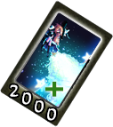| ¿Qué hace? | ¿Cuanto Cuesta? |
|---|---|
| Una system card para recuperar la salud perdida. | 2000 |
- Nivel 1: Cura 250 puntos de vida.
- Nivel 2: Cura 260 puntos de vida.
En Pasivo: Regenera vida lentamente mientras luchas. - Nivel 3: Cura 270 puntos de vida.
En Pasivo: Regenera el doble de vida mientras luchas. - Nivel 4: Cura 280 puntos de vida.
En Pasivo: Regenera el triple de vida mientras luchas.
New Card Album
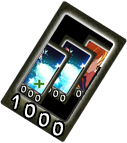| ¿Qué hace? | ¿Cuanto Cuesta? |
|---|---|
| Reinicia tú deck y obten un nuevo deck de cinco cartas. La reducción de costos no se aplica cuando usas tu carta de system card. |
1000 |
- Nivel 1: Reinicia tú Deck.
- Nivel 2: Reinicia tú Deck.
En Pasivo: Usar las cartas cuesta un 10% menos de energía. - Nivel 3: Reinicia tú Deck.
En Pasivo: Usar las cartas cuesta un 20% menos de energía. - Nivel 4: Reinicia tú Deck.
En Pasivo: Usar las cartas cuesta un 30% menos de energía.
Danmaku Booster
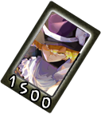| ¿Qué hace? | ¿Cuanto Cuesta? |
|---|---|
| Una carta de hechizos que recarga tu barra de Danmaku convirtiendo el poder. Cuando se usa, su barra permanece al máximo durante 8 segundos y no puede ganar energía mientras dura este efecto, más tres segundos adicionales después de que finaliza. |
1500 |
- Nivel 1: La barra permanece al máximo durante 8 segundos.
- Nivel 2: La barra permanece al máximo durante 9 segundos.
En Pasivo: Tu barra se carga un poco más rápido mientras luchas. - Nivel 3: La barra permanece al máximo durante 10 segundos.
En Pasivo: Tu barra se carga más rápido mientras luchas. - Nivel 4: La barra permanece al máximo durante 11 segundos.
En Pasivo: Tu barra se carga aún más rápido mientras luchas.
Skill Cards
Alchemy
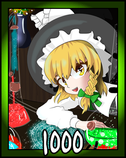| ¿Qué hace? |
|---|
| Mejora la eficiencia de sus frascos explosivos. |
| ¿En Qué Afecta? |
|---|
| Flask of Hazards |
| Magical Reusable Bomb |
| Makai Torch |
- Flask of Hazards: +12 de daño/nivel, +5 de daño protegido/nivel, el tamaño de la explosión aumenta en los niveles 2 y 4.
- Magical Reusable Bomb: +12 de daño/nivel, +8 de daño protegido/nivel, el tamaño de la explosión aumenta en los niveles 2 y 4.
- Makai Torch: Aumenta la altura de la explosión en los niveles 2 y 4. Aumenta el ancho en los niveles 1 y 3. +10% de daño/nivel.
Meteonic Mastery
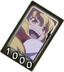| ¿Qué hace? |
|---|
| Mejora la eficiencia de tus habilidades meteónicas. |
| ¿En Qué Afecta? |
|---|
| Meteonic Debris |
| Meteonic Fragments |
| Meteonic Gush |
| Meteonic Rift |
| Meteonic Eruption |
- Meteonic Debris: +1 proyectil/nivel, +5% daño/nivel)
- Meteonic Fragments: +1 proyectil/nivel. Las explosiones se extienden sobre un área un poco más amplia. +10% daño/nivel.
- Meteonic Gush: +12% de daño/nivel.
- Meteonic Rift: +12% de daño/nivel.
- Meteonic Eruption: +12% de daño/nivel.
Beam Blasting
| ¿Qué hace? |
|---|
| Mejora los ataques de rayos. Afecta a danmaku Y spells. |
| ¿En Qué Afecta? |
|---|
| Stream Laser |
| Narrow Spark |
| Non-Directional Laser |
| Master Spark |
| Final Spark |
| Earthlight Ray |
- Stream Laser: +12% de daño/nivel, +1 daño protegido/nivel, el nivel 4 hace que el hitbox en el rayo sea un poco más grueso.
- Narrow Spark: +12% de daño/nivel, +1 daño/nivel protegido.
- Non-Directional Laser: +5% de daño/nivel.
- Master Spark: +19 de daño/nivel.
- Final Spark: +19 de daño/nivel.
- Earthlight Ray: +10% de daño/nivel.
Escape Arts
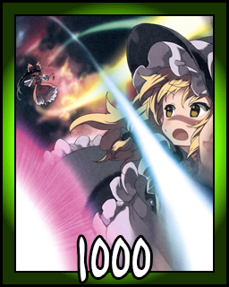| ¿Qué hace? |
|---|
| Mejorar la eficacia del grazing. |
| ¿En Qué Afecta? |
|---|
| +10 ticks de duración máxima de grazing. |
| +25% de potencia ganada al hacer grazing con éxito. |
| -1 tics de duración del tiempo de reutilización del grazing (Lo que significa que puedes hacer grazing de nuevo o protegerte mucho más rápido) |
Haywiring
| ¿Qué hace? |
|---|
| Concéntrate en danmaku para mejorar el daño, mientras te prestas menos atención. No tiene efecto en las spell cards. |
| ¿En Qué Afecta? |
|---|
| +2% de daño con danmaku. |
| +7% de probabilidad de dar un golpe crítico con danmaku. |
| +5% de daño crítico adicional. |
| -5% de defensa. |
| -4% de defensa adicional al disparar danmaku. |
| -10% de fuerza de ataque físico. |
Spell Cards
Stardust Reveire
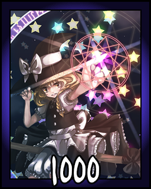| ¿Qué hace? | ¿Cuanto Cuesta? |
|---|---|
| Una versión mejorada de Witch Leyline. El graze/inmunidad solo se aplica al avanzar o golpear. Se puede encadenar en: Comet - Blazing Star |
1000 |
- Nivel 1: 160 de daño y graze.
- Nivel 2: 170 de daño y graze, inmune a los ataques normales.
En Pasivo: Witch Leyline hace +10% de daño. - Nivel 3: 170 de daño y graze, inmune a los ataques normales y especiales.
En Pasivo: Witch Leyline hace +20% de daño. - Nivel 4: Nivel 4: 190 de daño, hace graze incluso a través de proyectiles spell cards, inmune a ataques normales y especiales.
En Pasivo: Witch Leyline hace +30% de daño.
Escape Velocity
| ¿Qué hace? | ¿Cuanto Cuesta? |
|---|---|
| Una versión mejorada de Misama Sweep. Esto proporciona invencibilidad durante toda la duración del ataque contra todos los ataques físicos y proyectiles que no sean spell. |
1000 |
- Nivel 1: 175 de daño.
- Nivel 2: 189 de daño.
En Pasivo: +10% de daño al usar Misama Sweep. - Nivel 3: 203 de daño.
En Pasivo: +20% de daño al usar Misama Sweep. - Nivel 4: 217 de daño.
En Pasivo: +30% de daño al usar Misama Sweep.
Meteonic Shower
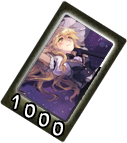| ¿Qué hace? | ¿Cuanto Cuesta? |
|---|---|
| Versión mejorada de Meteonic Debris. | 1000 |
- Nivel 1: Daño Más Bajo.
- Nivel 2: Un Poco Más de Daño.
- Nivel 3: Mas Daño.
- Nivel 4: La Mayoría de los Daños.
Earthlight Ray
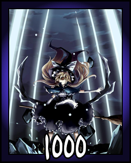| ¿Qué hace? | ¿Cuanto Cuesta? |
|---|---|
| Un rayo láser que sale del suelo y avanza, luego gira. Para infligir una cantidad aceptable de daño, el oponente debe estar en el lugar donde se detiene el rayo. |
1000 |
- Nivel 1: El rayo se detiene durante 2 segundos antes de volver.
- Nivel 2: El rayo se detiene durante 2,5 segundos antes de retroceder y hace 1 daño protegido/golpe.
- Nivel 3: El rayo se detiene durante 3 segundos antes de retroceder y hace 2 daño protegido/golpe
- Nivel 4: El rayo se detiene durante 3,5 segundos antes de retroceder y hace 3 daño protegido/golpe
Non-Directional Laser
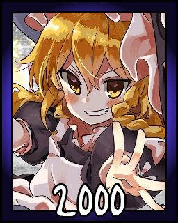| ¿Qué hace? | ¿Cuanto Cuesta? |
|---|---|
| Un ataque de rayo láser que consiste en disparar múltiples láseres en todas las direcciones. Invencibilidad total cuando se usa. No hay daño cuando se bloquea porque la energía está desenfocada. |
2000 |
- Nivel 1: Daño Base.
- Nivel 2: Mas Daño.
- Nivel 3: Aún Más Daño.
- Nivel 4: Mucho Más Daño que el Nivel 3.
Orreries Pulsar
| ¿Qué hace? | ¿Cuanto Cuesta? |
|---|---|
| Genera orbes que pueden bloquear proyectiles y absorber energía de ellos. La energía absorbida depende del daño y puede ser de 5 a 20 unidades por golpe. La energía se pierde al recibir golpes, y también de forma paulatina. Si se acaba la energía, los orbes desaparecen. Si se acumula suficiente energía, los orbes desencadenarán un ataque láser no direccional que no se ve afectado por la carga ni la genera. |
2000 |
- Nivel 1: Los orbes pierden 10 unidades de poder por cada golpe recibido y 10 por cada segundo transcurrido.
- Nivel 2: Los orbes pierden 9 unidades de poder por cada golpe recibido y 9 por cada segundo transcurrido.
- Nivel 3: Los orbes pierden 8 unidades de poder por cada golpe recibido y 8 por cada segundo transcurrido.
- Nivel 4: Los orbes pierden 7 unidades de poder por cada golpe recibido y 7 por cada segundo transcurrido.
Starstorm
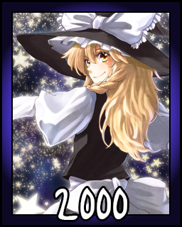| ¿Qué hace? | ¿Cuanto Cuesta? |
|---|---|
| Una versión mejorada de Meteonic Shower. Las estrellas se extienden en todas direcciones y el ataque es interrumpible. |
2000 |
- Nivel 1: Daño Más Bajo.
- Nivel 2: Un Poco Más de Daño.
- Nivel 3: Mas Daño.
- Nivel 4: Mucho Más Daño que el Nivel 3.
Pandora's Fountain
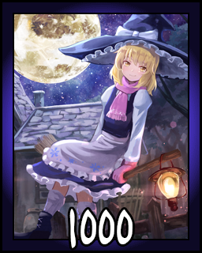| ¿Qué hace? | ¿Cuanto Cuesta? |
|---|---|
| Una spell prohibida que Marisa encontró en un libro que adquirió. Magia poderosa que Marisa aún no domina. No puede controlar la dirección del flujo de energía, solo canalizar la energía bruta. El efecto se aplica para ambos jugadores, pero todos pueden ser golpeados por uno diferente. Este ataque es imperdonable. |
1000 |
- Nivel 1: Cada jugador se ve afectado por un efecto aleatorio 3 veces, de las siguientes: Gana 1000 de poder, Gana el poder máximo, Pierde 1000 de poder, Pierde todo el poder, Recibe 100 de daño, Recibe 200 de daño, Gana 100 de Vida, Gana 200 de Vida, Gana el máximo de Vida.
- Nivel 2: Igual que el anterior, pero "Pierde 1000 de poder" no tiene efecto en Marisa.
- Nivel 3: Igual que arriba, y "Recibe 100 de daño" tampoco tiene efecto en Marisa.
- Nivel 4: Igual que arriba, y "Obtiene 100 de Vida" no tiene efecto en el oponente.
- Nota1: KO no se verifica durante el ataque, por lo que es posible perder primero, luego ganar vida y sobrevivir incluso si se llega a 0 mientras tanto.
Master Spark
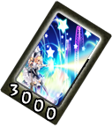| ¿Qué hace? | ¿Cuanto Cuesta? |
|---|---|
| Un ataque de rayo láser altamente dañino que también viene con total invencibilidad. El rayo se puede disparar en diagonal si el oponente no está directamente al frente. |
3000 |
- Nivel 1: 190 de Daño, 38 de Daño estando Protegidos.
- Nivel 2: 228 de Daño, 38 de Daño estando Protegidos.
- Nivel 3: 266 de Daño, 38 de Daño estando Protegidos.
- Nivel 4: 304 de Daño, 38 de Daño estando Protegidos.
Comet - Blazing Star
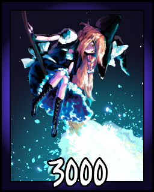| ¿Qué hace? | ¿Cuanto Cuesta? |
|---|---|
| Una versión mejorada de Stardust Reveire. La velocidad extrema provoca una onda de choque que permite que el ataque golpee incluso desde la distancia, y también mantiene alejados a los ataques entrantes. Daña cuando se bloquea en el aire, y la cantidad de daño depende de la distancia de Marisa y se escala linealmente. |
3000 |
- Nivel 1: Invencibilidad total, 140 de daño. 160 de daño protegido al bloquear un golpe directo en el aire.
- Nivel 2: Invencibilidad total, 200 de daño. 210 de daño protegido al bloquear un golpe directo en el aire.
- Nivel 3: Invencibilidad total, 260 de daño. 260 de daño protegido al bloquear un golpe directo en el aire.
- Nivel 4: Invencibilidad total, 320 de daño. 310 de daño protegido al bloquear un golpe directo en el aire.
Dragon Meteor
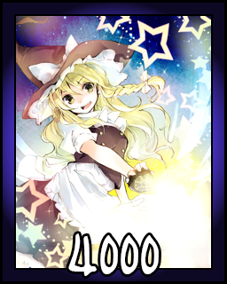| ¿Qué hace? | ¿Cuanto Cuesta? |
|---|---|
| La spell ofensivo más poderoso de Marisa. Si bien hace el mayor daño y se dispara varias veces, es muy lento y estará protegido la mayor parte del tiempo. Sin embargo, el daño protegido es alto, por lo que no es un problema. |
4000 |
- Nivel 1: Dispara 3 veces.
- Nivel 2: Dispara 4 veces.
- Nivel 3: Dispara 5 veces.
- Nivel 4: Dispara 6 veces.
Final Spark
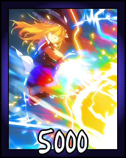| ¿Qué hace? | ¿Cuanto Cuesta? |
|---|---|
| Una Master Spark aún más poderosa. Lanza un rayo débil primero para aturdir al oponente, antes de liberar todo su poder. Esta técnica especial hace que este ataque sea extremadamente rápido y difícil de defender. A diferencia de Master Spark, este solo se puede usar de pie y solo avanza, sin embargo, es más ancho. |
5000 |
- Nivel 1: 209 de daños, 40 de daño estando protegido.
- Nivel 2: 266 de daños, 60 de daño estando protegido.
- Nivel 3: 323 de daños, 80 de daño estando protegido.
- Nivel 4: 380 de daños, 100 de daño estando protegido.
Phantom Thief Marisa Appears!
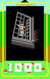| ¿Qué hace? | ¿Cuanto Cuesta? |
|---|---|
| Intenta lanzar una escoba rápida hacia el oponente para robar sus cartas mágicas. Solo los ataques de tipo agarre de spell pueden golpear durante este ataque. Indefendible, pero falla si el oponente está demasiado lejos o salta. Se puede encadenar en: Phantom Thief Marisa Strikes Again! |
1000 |
- Nivel 1: 80 de daño. La spell aprendida del oponente se reduce en 1.
- Nivel 2: 100 de daño. La spell aprendida del oponente se reduce en 2.
- Nivel 3: 120 de daño. La spell aprendida del oponente se reduce en 3.
- Nivel 4: 140 de daño. La spell aprendida del oponente se reduce en 4.
Niveles de cartas declarados de Marisa hasta el máximo. Si no tiene ninguna, la carta seleccionada en la mano sube de nivel. Este efecto solo se aplica si el oponente tenía una carta declarada.
Phantom Thief Marisa Strikes Again!
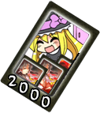| ¿Qué hace? | ¿Cuanto Cuesta? |
|---|---|
| Intenta lanzar una escoba rápida hacia el oponente para robar sus cartas mágicas. Solo los ataques de tipo agarre de spell pueden golpear durante este ataque. Indefendible, pero falla si el oponente está demasiado lejos o salta. Se puede encadenar en: Phantom Thief Marisa's Great Robbery! |
2000 |
- Nivel 1: 160 de daño. Todas las copias de 1 carta aleatoria se eliminan del deck y la mano del oponente.
- Nivel 2: 180 de daño. Todas las copias de 2 carta aleatoria se eliminan del deck y la mano del oponente.
- Nivel 3: 200 de daño. Todas las copias de 3 carta aleatoria se eliminan del deck y la mano del oponente.
- Nivel 4: 220 de daño. Todas las copias de 4 carta aleatoria se eliminan del deck y la mano del oponente.
Phantom Thief Marisa's Great Robbery!
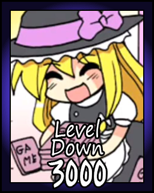| ¿Qué hace? | ¿Cuanto Cuesta? |
|---|---|
| Intenta lanzar una escoba rápida hacia el oponente para robar sus cartas mágicas. Solo los ataques de tipo agarre de spell pueden golpear durante este ataque. Indefendible, pero falla si el oponente está demasiado lejos o salta. Se puede encadenar en: Phantom Thief Marisa's Great Robbery! |
3000 |
- Nivel 1: 240 de daño. Todas las cartas de habilidad del oponente se nivelan en uno.
Cada una de las cartas de habilidad de Marisa sube de nivel en la misma cantidad que perdió el oponente. - Nivel 2: 260 de daño. Todas las cartas de habilidad del oponente se nivelan en dos.
Cada una de las cartas de habilidad de Marisa sube de nivel en la misma cantidad que perdió el oponente. - Nivel 3: 280 de daño. Todas las cartas de habilidad del oponente se nivelan en tres.
Cada una de las cartas de habilidad de Marisa sube de nivel en la misma cantidad que perdió el oponente. - Nivel 4: 300 de daño. Todas las cartas de habilidad del oponente se nivelan en cuatro.
Cada una de las cartas de habilidad de Marisa sube de nivel en la misma cantidad que perdió el oponente.
Sungrazer
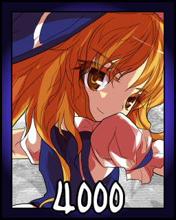| ¿Qué hace? | ¿Cuanto Cuesta? |
|---|---|
| Este movimiento es exclusivo de este juego, ya que es un movimiento similar a la Last Word del Touhou 13.5. | 4000 |